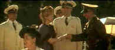

Evita/B-,A- |
Disney/1996/135m/WS 2.35 |
There’s no argument that Evita is a spectacular production. Though the first dynamic forty minutes are pulsing with energy, director Alan Parker does not succeed in shaping Eva Peron into a sympathetic character. Evita’s early potential dissipates into a cold mélange of the preening Eva Peron intercut with acts of violence perpetrated by the various powers of Argentina against its people. Combined with inconsistent musical entertainment, the artificial passion of the screenplay fails to add the needed dramatic ingredient to the Evita mix, preventing the film from reaching full potential.
 |
| Evita spreads her social wings©Disney |
Alan Parker is a director that understands the marriage of music
and film extremely well. His previous musical successes include Fame and Bugsy
Malone, both brash and vibrant movies. This time Parker is locked into the material
at hand and although much of the movie Evita is imaginatively presented, after
depicting Eva’s determined rise into the circles of Buenos Aires power, Evita
falls into a repetitive and mind numbing pattern.
Madonna is fabulous as Evita. She exhibits incredible
charisma capturing the flamboyant and resourceful Eva Peron. Watching her deliver the sung
dialogue while pouring enormous emotion into her performance is wonderful. Equally dynamic
is Antonio Banderas as Che, dealing out a douse of alternate reality to Eva’s.
Banderas’ singing is passionate. He uses his body and facial expressions to embellish
every lyric with force of personality. In contrast, Jonathan Pryce is very stiff as Juan
Peron. His role stands as a pylon to support the efforts of Madonna.
The music and songs of Evita comprise its real heart and
soul. The burst of energy that is "Buenos Aires" is delightfully sung by Madonna
with Parker at his best is cutting together the accompanying images. "Good night and
Thank You," sung by Banderas and chorus, is often hilarious as it is caustic. "A
New Argentina," while melodic and uplifting in spirit, fails to maintain a fluid
dramatic narrative, and "Rainbow Tour" is as all over the place as Eva
ambassadorial endeavors. And Madonna delivers a powerful "Don’t Cry for Me
Argentina."
The most difficult barrier I found to enjoying the power of the
drama of Evita is that the studio recorded soundtrack lacks immediacy.
It’s sounds like the voices and actors
are unattached. Parker notes that two songs were actually recorded on the set and
Pryce’s rendition of "She’s a Diamond," does seem more natural than
the other songs.
Another sharp, well-made DVD
from Disney, Evita has vital colors and good contrast levels in a variety of
light situations. There is some excess NTSC artifacting due to slight over-enhancement of
the sharpness. The 5:1 sound is dynamite. The mix is cleaner and far better than my local
big screen theater experience. Explosions pack plenty of punch and lyrics are uniformly
clear, albeit hanging somewhere in space.
The Feature
Archive has articles ranging from John
Ford to Blonde
Bimbos, The
Heistmasters, Akira
Kurosawa and Frank
Darabont.

Click on the image above to for a view of Hollywood's great
dance musicals. Astaire, Kelly, Rogers and more....
Check out the Movie
Poster Archive for
short bios and images of Susan Hayward, Kirk Douglas, Katharine
Hepburn and many more. This month's featured star is Clark
Gable.

Imaging Science Foundation promotes proper
standards in home theater viewing. ISF trained technicians offer
monitor calibration services to consumers. The difference in
a properly calibrated monitor can be astounding. Click on
the image to find an ISF member near you.
Home
Theater Reference Reviewing System

When you read a DVD review it's of utmost importance to know
what equipment is being used to evaluate quality. Click on the
projector to find out more.
HOT
LINKS
DVD
Verdict
They may be
judgmental, but that's the point, isn't it. Lots of DVD reviews
plus news and more
The
Home Theater Forum
Looking
for lively and helpful exchanges on home theater, DVD, movies.
Visit this friendly site and get a hardy welcome.